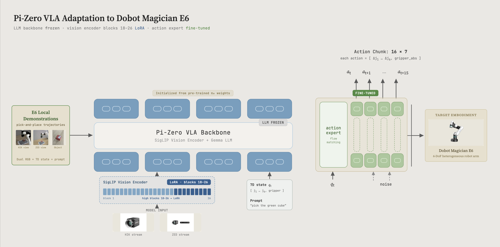
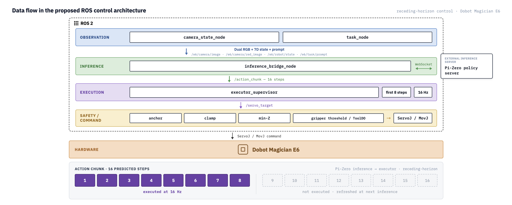

Local VLA fine-tuning for a heterogeneous robot arm.
Flow-matched VLA adaptation
Efficient VLA adaptation for real-world robot manipulation.
FlowBridge originates from our Pi-Zero adaptation research and currently develops a π0.5-based policy validated on the Dobot Magician E6.
Dobot E6 · Validated
π0.5 · v23
ROS2 · 20 Hz
Representative v23 real-world execution22.5 s
Research lineage
From Pi-Zero research to a validated π0.5 system.
The research foundation remains Pi-Zero adaptation. The current representative implementation uses the π0.5 base model with parameter-efficient vision and action-expert adaptation.
Pretrained flow-matched policy foundation.
SigLIP blocks 18–26 and the action expert.
Real-world execution with ROS2 safety control.
Validated system
One system, described precisely.
Dobot Magician E6
6-DoF manipulation with binary suction.
The policy consumes dual RGB observations, joint state, and a language prompt. It predicts a 16-step chunk of six joint deltas plus one absolute suction command.
6-DoF7D actionDual RGBJetson AGX Orin
Policyπ0.5 · pi05_e6_v23_lora
Checkpoint20,000 steps
ObservationHIK + ZED RGB · 7D state · prompt
Action6 Δ-joints (deg) + suction
Execution20 Hz · 16-step horizon
Dataset198 episodes · 42,495 frames
Research tracks
A research program, not a repository list.
Efficient VLA Adaptation
Parameter-efficient adaptation of vision and action modules under limited local data and compute.
ROS2 Execution & Safety
Action-chunk validation, joint-delta limits, tool-height constraints, and hardware command streaming.
Robot Data & Benchmarking
Synchronized dual-camera demonstrations and task-level evaluation for repeatable manipulation research.
Vision & Action LoRA Analysis
Layer-scoped studies across SigLIP and the action expert to understand adaptation behavior.
Future Embodiment Transfer
Future work will extend the interface to additional robot arms and end-effector configurations; no additional embodiment is claimed as validated today.
Architecture
Model adaptation meets real-time control.

Model adaptation
Scoped SigLIP LoRA and a fine-tuned action expert.
Naming note: the figure retains the Pi-Zero research lineage; the representative v23 checkpoint is initialized from π0.5 base weights.
ROS2 execution variant
WebSocket inference, action-chunk supervision, safety checks, and Dobot commands.
Configuration note: the figure depicts a 16 Hz / first-8-step receding-horizon variant; the public client defaults to 20 Hz / 16 steps per inference.Validated results
Measured on the Dobot E6 setup.
Real-world demos
Bidirectional policy execution.
Representative v23 executions on the physical Dobot E6. Exact per-video control-mode metadata remains under verification.
Left → Right
Real-world execution across the workspace.
Right → Left
Reverse-direction execution with the same policy family.
Publications
Research record and current manuscript.
VLA 모델의 국소 미세조정을 이용한 이기종 로봇팔 궤적 예측 및 ROS 기반 제어
Yubeen Ha · In-Yeop Choi*
KSCI Summer Conference Proceedings · Vol. 34, No. 2
Trajectory Prediction and ROS-based Control for a Heterogeneous Robot Arm via Local Fine-Tuning of a Pi-Zero VLA Model
Yubeen Ha · In-Yeop Choi*
JKSCI
FlowBridge Research Team
Yubeen Ha · In-Yeop Choi, corresponding author